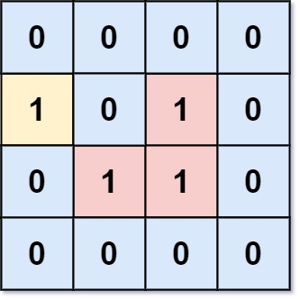
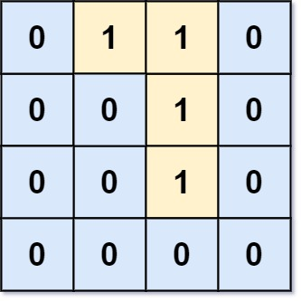

1020. 飞地的数量
反向沉岛：从边界上的 1 出发 BFS，连通的全沉成 0，剩下的 1 就是飞地。
思路
- 飞地 = 走不出边界的陆地；与其逐格判断「能否出去」，不如从边界一次 BFS 标记全部「能出去的」。
- 边界上的 1 全部入队，入队时顺手置 0 兼当访问标记，省掉 visited 数组。
- BFS 扩散沉掉整片连通块后，把剩下的 1 求和一遍即答案。
图解
最优解
1import java.util.*;2 3class Solution {4 public int numEnclaves(int[][] grid) {5 int m = grid.length, n = grid[0].length;6 Deque<int[]> queue = new ArrayDeque<>();7 // 边界上的陆地先沉掉：入队时顺手改成 0，兼当「已访问」标记8 for (int i = 0; i < m; i++) {9 for (int j = 0; j < n; j++) {10 if (grid[i][j] == 1 && (i == 0 || i == m - 1 || j == 0 || j == n - 1)) {11 grid[i][j] = 0;12 queue.add(new int[]{i, j});13 }14 }15 }16 int[] d = {1, 0, -1, 0, 1}; // (d[k], d[k+1])：下、右、上、左17 while (!queue.isEmpty()) {18 int[] p = queue.poll();19 for (int k = 0; k < 4; k++) {20 int x = p[0] + d[k], y = p[1] + d[k + 1];21 if (x >= 0 && x < m && y >= 0 && y < n && grid[x][y] == 1) {22 grid[x][y] = 0; // 与边界连通的陆地一并沉掉23 queue.add(new int[]{x, y});24 }25 }26 }27 // 沉剩下的 1 就是飞地：出不了边界的陆地28 int ans = 0;29 for (int[] row : grid) {30 for (int v : row) ans += v;31 }32 return ans;33 }34}题目
给你一个大小为 m x n 的二进制矩阵 grid ，其中 0 表示一个海洋单元格、1 表示一个陆地单元格。
一次 移动 是指从一个陆地单元格走到另一个相邻（上、下、左、右）的陆地单元格或跨过 grid 的边界。
返回网格中 无法 在任意次数的移动中离开网格边界的陆地单元格的数量。
示例 1：

输入：grid = [[0,0,0,0],[1,0,1,0],[0,1,1,0],[0,0,0,0]] 输出：3 解释：有三个 1 被 0 包围。一个 1 没有被包围，因为它在边界上。
示例 2：

输入：grid = [[0,1,1,0],[0,0,1,0],[0,0,1,0],[0,0,0,0]] 输出：0 解释：所有 1 都在边界上或可以到达边界。
提示：
m == grid.lengthn == grid[i].length1 <= m, n <= 500grid[i][j]的值为0或1
题面取自力扣当前版本。
数据快照 2026-11-04。题面版权归力扣所有，本站点仅供本人学习使用，请勿对外发布。